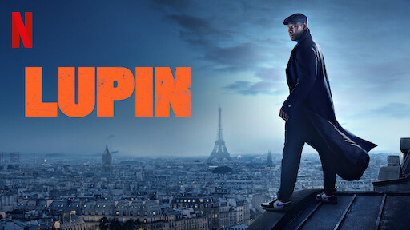

Hi there! I'm Marinna.
I'm here to share with you some of the things that bring me joy in life. On my website, you'll find a diverse range of content: from exciting games and great movies and series to marvelous books. Whether you're looking for entertainment, inspiration, or just a little bit of fun, there's something here for everyone. So, feel welcome and take a look around! I hope you enjoy exploring my world and discovering new things along the way.
GAMES
Summary:
Teamfight Tactics is an auto battler game developed and published by Riot Games. The game is a spinoff of League of Legends and is based on Dota Auto Chess, where players compete online against seven other opponents by building a team to be the last one standing.
Trailer:
ORI AND THE BLIND FOREST computer game
Summary:
Ori and the Blind Forest tells the tale of a young orphan destined for heroics, through a visually stunning action-platformer crafted by Moon Studios for PC. Featuring hand-painted artwork, meticulously animated character performance, and a fully orchestrated score, “Ori and the Blind Forest” explores a deeply emotional story about love and sacrifice, and the hope that exists in us all.
Trailer:
7 WONDERS DUEL board game
Summary:
7 Wonders Duel, a two-player game in the universe of 7 Wonders, the most awarded game in the world! Challenge your opponent and bring your civilization to victory with prestigious buildings, military strength, or scientific supremacy. All in only 30 minutes!
How to play:
AZUL board game
Summary:
Azul is a multiple award-winning, tile-placement game. As a tile-laying artist, you have been challenged to embellish the walls of the Royal Palace of Evora. The goal of Azul is to complete your display board, earning points as you place tiles and create patterns. Loaded with high-quality components, Azul catches the eye and engages players with its beautiful art, clear graphic design, and colorful resin tile pieces.
How to play:
MOVIES & SERIES
THE IMITATION GAME movie
Summary:
During World War II, the English mathematical genius Alan Turing tries to crack the German Enigma code with help from fellow mathematicians while attempting to come to terms with his troubled private life.
Trailer:
THE AGE OF ADALINE movie
Summary:
A young woman, born at the turn of the 20th century, is rendered ageless after an accident. After many solitary years, she meets a man who complicates the eternal life she has settled into.
Trailer:
LUPIN serie
Summary:
Inspired by the adventures of Arsène Lupin, gentleman thief Assane Diop sets out to avenge his father for an injustice inflicted by a wealthy family.
Trailer:
THE QUEEN'S GAMBIT serie

Summary:
Orphaned at the tender age of nine, prodigious introvert Beth Harmon discovers and masters the game of chess in 1960s USA. But child stardom comes at a price.
Trailer:
BOOKS
NINE TOMORROWS, Isaac Asimov
Summary:
The book is a collection of nine short stories each different and unique yet joined by Asimov's unrealistic yet believable style. The nine stories are: Profession; The Feeling of Power; The Dying Night; I'm in Marsport without Hilda; The Gentle Vultures; All the Troubles of the World; Spell my Name with an S; The Last Question (one of Asimov's most often requested stories); and The Ugly Little Boy (Asimov's own personal favorite).
Book review:
JONATHAN STRANGE & MR NORELL, Susanna Clarke
Summary:
In the midst of the Napoleonic Wars in 1806, most people believe magic to have long since disappeared from England - until the reclusive Mr. Norrell reveals his powers and becomes an overnight celebrity. Another practicing magician then emerges: the young and daring Jonathan Strange. He becomes Norrell's pupil, and the two join forces in the war against France. But Strange is increasingly drawn to the wild, most perilous forms of magic, and he soon risks sacrificing his partnership with Norrell and everything else he holds dear.
Book review:
BLINDNESS, José Saramago
Summary:
Blindness tells the story of a group of people who, for some unknown reason, suddenly lose their sight. They are all sent to an asylum where the inmates quickly turn to violence and force to get what they want. As tensions grow and people become increasingly dehumanised, everybody wants to escape. But without knowing what caused the blindness epidemic, how can anybody stop it?
Book review:
THE SECRET HISTORY, Donna Tartt
Summary:
Under the influence of a charismatic classics professor, a group of clever, eccentric misfits at a New England college discover a way of thought and life a world away from their banal contemporaries. But their search for the transcendent leads them down a dangerous path, beyond human constructs of morality.